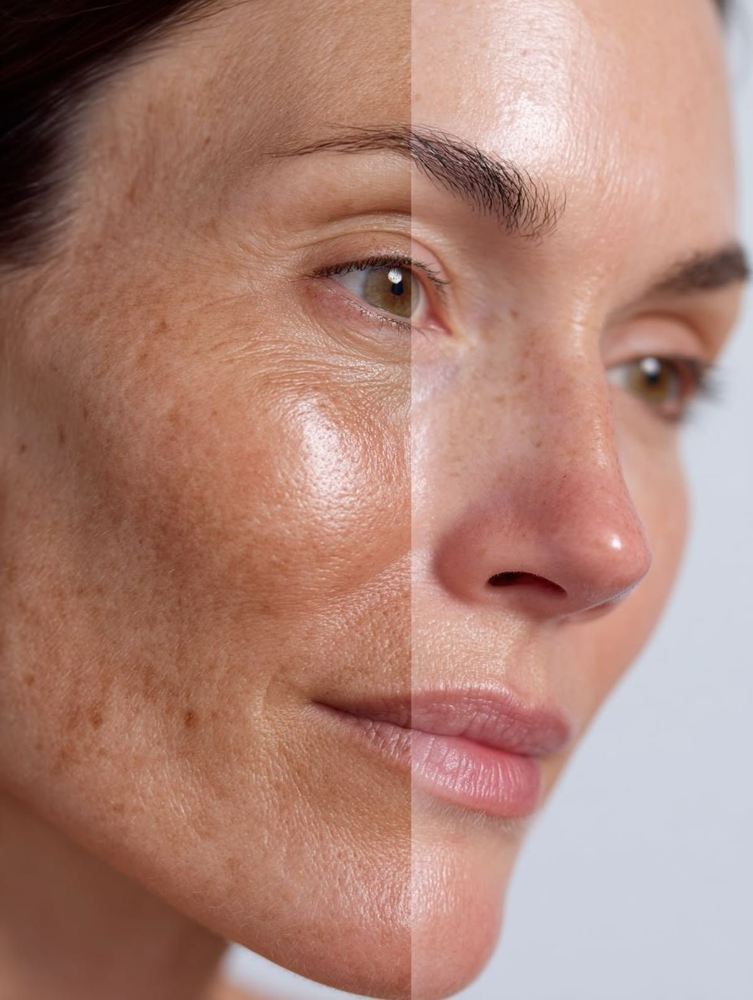
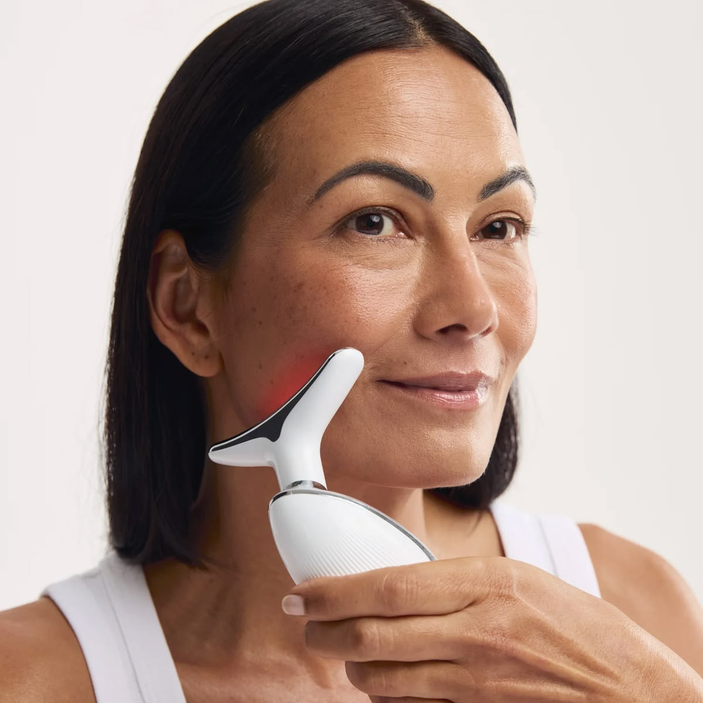
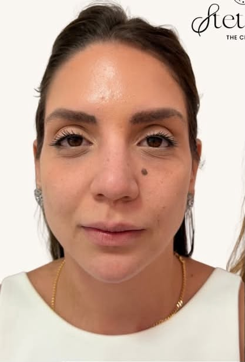
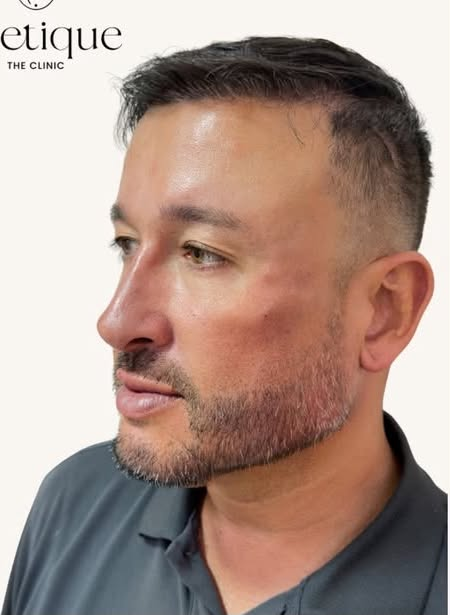

Espaço reservado para um depoimento real e autorizado. Nenhuma avaliação de paciente foi adicionada nesta demonstração.
Beleza refinada.
Essência preservada.
Um espaço para apresentar tratamentos estéticos e uma abordagem individualizada de cuidado.
Avaliação
individual
individual
Planejamento
personalizado
personalizado
Cuidado
em cada etapa
em cada etapa
◆CUIDADO
INDIVIDUAL✦ ✦ ✦ ✦ ✦ESCUTA. PLANEJAMENTO.
ATENÇÃO.✧
INDIVIDUAL✦ ✦ ✦ ✦ ✦ESCUTA. PLANEJAMENTO.
ATENÇÃO.✧
Nossos tratamentos ◆

Estética facial
Procedimentos faciais e planejamento individual.
Contorno corporal
Abordagens corporais conforme avaliação.
Cuidados corporais
Possibilidades definidas pelo profissional.
Injetáveis
Indicações e técnicas a confirmar.

Pele & tecnologia
Cuidados com a pele e recursos disponíveis.
Não cirúrgicos
Opções de cuidado conforme indicação.
Categorias ilustrativas — validar os serviços efetivamente oferecidos.
Galeria de cuidados
Um olhar para cada detalhe.
Toque para pausar. Arraste para escolher a direção.
Galeria de resultados — conteúdo a validar


Espaços demonstrativos. Inserir apenas imagens autorizadas e conteúdo validado pelo profissional.
Conheça a profissional
Dra. Maria Drummond
Formação e registro profissional
a serem informados e validados.
Este espaço apresenta a trajetória, a abordagem de atendimento e a formação profissional. O conteúdo definitivo será escrito a partir de informações confirmadas.
Converse com a equipe ›
Um espaço de cuidadoDiscreto. Acolhedor. Individual.
Espaço para depoimentos autorizados
Espaço reservado para um depoimento real e autorizado. Nenhuma avaliação de paciente foi adicionada nesta demonstração.
Espaço reservado para um depoimento real e autorizado. Nenhuma avaliação de paciente foi adicionada nesta demonstração.
INFORMAÇÃO COM CLAREZA
Um espaço para conhecer mais.

Atendimento
A primeira conversa: espaço para suas perguntas.
Uma apresentação do diálogo inicial e dos assuntos que o site pode ajudar a organizar.
Ler artigo
Informação
Informação clara, escolhas com contexto.
O papel de um conteúdo informativo sem promessas prontas nem decisões automáticas.
Ler artigo
Institucional
Conheça o nosso espaço antes da visita.
Uma proposta editorial para apresentar ambiente, acesso e canais de atendimento.
Ler artigoArtigos demonstrativos — revisar conteúdo e responsabilidade editorial antes da publicação.
Dúvidas frequentes
Antes de começar,
vamos conversar.
Reunimos algumas informações para ajudar você a dar o primeiro passo com mais clareza.
Tenho outra dúvidaComo funciona a primeira consulta?
Este espaço pode explicar o atendimento inicial, a conversa sobre expectativas e a avaliação individual. O fluxo real deve ser confirmado com a equipe.
Preciso saber qual procedimento quero fazer?
Você pode apresentar suas dúvidas no contato inicial. O site não escolhe procedimentos nem substitui a conversa com o profissional.
Onde posso consultar valores e formas de pagamento?
Consulte a equipe sobre valores e condições. Este modelo não publica preços nem realiza orçamentos automáticos.
Como posso solicitar um agendamento?
O formulário prepara uma mensagem no WhatsApp quando um número autorizado estiver configurado. O envio depende de sua ação no aplicativo e a data precisa ser confirmada pela equipe.
Posso esclarecer outras dúvidas antes de agendar?
Use os canais confirmados da equipe. Evite relatar informações sensíveis no campo de mensagem deste modelo demonstrativo.
Localização
Um espaço para
receber você.
Consulte o endereço e organize sua visita. O atendimento depende de confirmação.
- Endereço
- Endereço completo a confirmar.
- Horários
- Consulte a disponibilidade com a equipe.
- Como chegar
- Informações de acesso a confirmar.
Mapa fornecido como referência de layout. Não confirma a localização da clínica.
Consultar rotaPronto para iniciar
um novo cuidado?
Prepare uma solicitação para conversar sobre as possibilidades de atendimento.
Plano
individualAtendimento
personalizadoPrivacidade
e discrição
individualAtendimento
personalizadoPrivacidade
e discrição